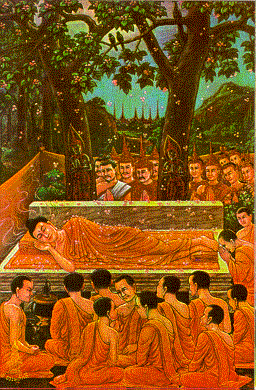
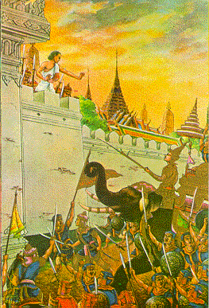

BuddhaSasana Home Page
This document is written in Vietnamese, with
Unicode Times font
| 31 | 32 |
|  |  |
| The Buddha entered into
Pari-Nibbana at the Sal grove in Kusinara city, 543 B.C.E., after preaching for the
welfare of the peoples for forty-five years. Ðức Phật nhập Bát-Niết-bàn trong rừng Sala, gần thành Kusinara, năm 543 trước Tây lịch, sau 45 năm hoằng pháp độ sinh. |
Division of the Buddha's relics: A
brahmin named Tona told the kings of seven countries to stop fighting for the Buddha's
relics and better to practise the Dharma. He divided the relics to those kings
proportionally. Phân chia Xá-lợi của Ðức Phật: Một vị bà-la-môn tên là Tona khuyên các vua đến từ bảy vương quốc không nên tranh nhau về Xá-lợi của Phật, mà hãy nghiêm túc thực hành theo Giáo Pháp. Sau đó, vị nầy phân chia đồng đều các phần Xá-Lợi cho các vị vua đó. |
[Mục Lục][01-02][03-04][05-06][07-08][09-10][11-12][13-14]
[15-16][17-18][19-20][21-22][23-24][25-26][27-28][29-30][31-32]
Source: Post Cards from S. Dhumphakdi & Sons Publisher, Bangkok, Thailand